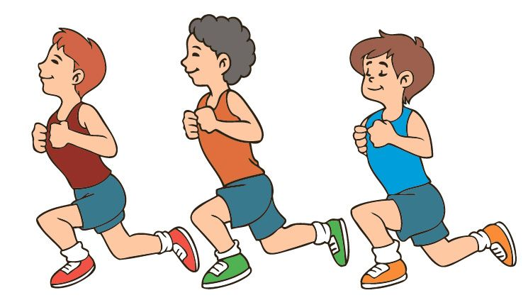

INFORMACION SOBRE EL TEMA
Bienvenido a la sección de información, aquí podrás hacer una retro alimentación del tema propuesto en el juego y además si deseas profundizar mas el tema, puedes aprender con la siguiente información:
¿QUE ES LA VELOCIDAD FINAL?
.png)
La velocidad final hace referencia a la velocidad total alcanzada en el movimiento del cuerpo esta, como todas las magnitudes de la velocidad, se representa en m/s como vf, esta tiene a su vez diversas formulas como lo son:
Formulas Velocidad Final
Formula #1: Una de las formulas para hallar la velocidad final es: Vi + (a*t), donde Vi es la velocidad Inicial, A es aceleración y T es el tiempo
 Formula #2: Otra de las formulas es: 2y/t - Vi, donde Y es la altura, T es el tiempo y Vi es la Velocidad Inicial
Formula #3: Otra de las formulas es: √Vi^2 + 2ay, donde Vi es la Velocidad Inicial, A es la aceleración y Y es la Altura
.jpg)
Formula #4: Por otra parte si deseas hallar la velocidad final elevada a la 2 puedes utilizar la siguiente formula: Vi^2 + 2ay, donde Vi es la Velocidad Inicial, A es la aceleración y Y es la Altura